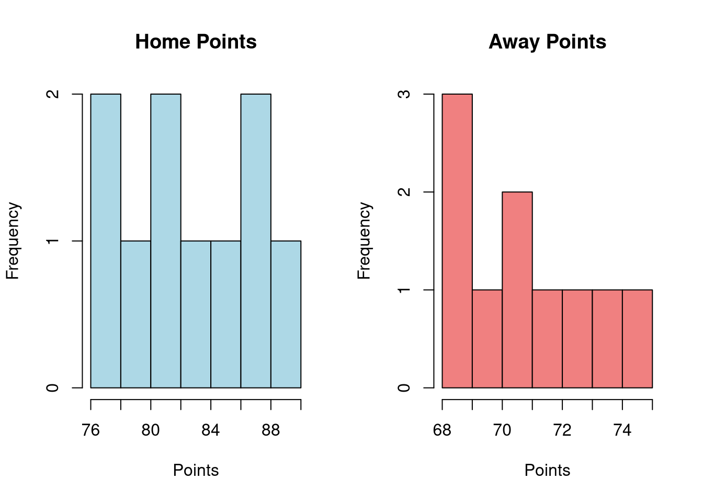
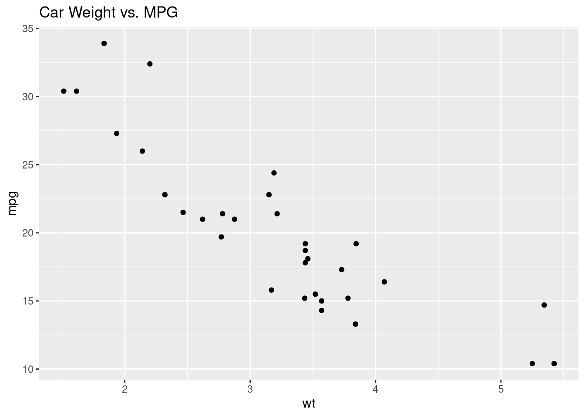
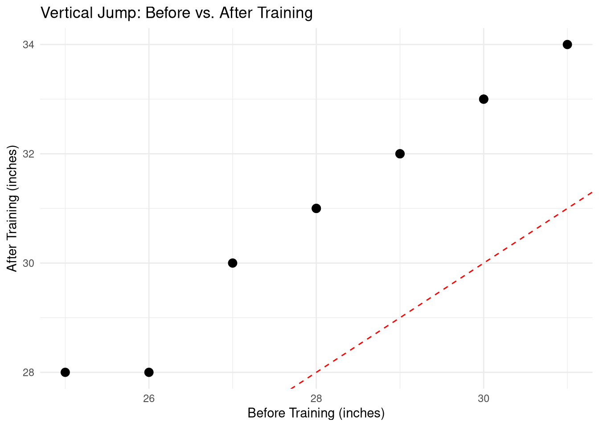
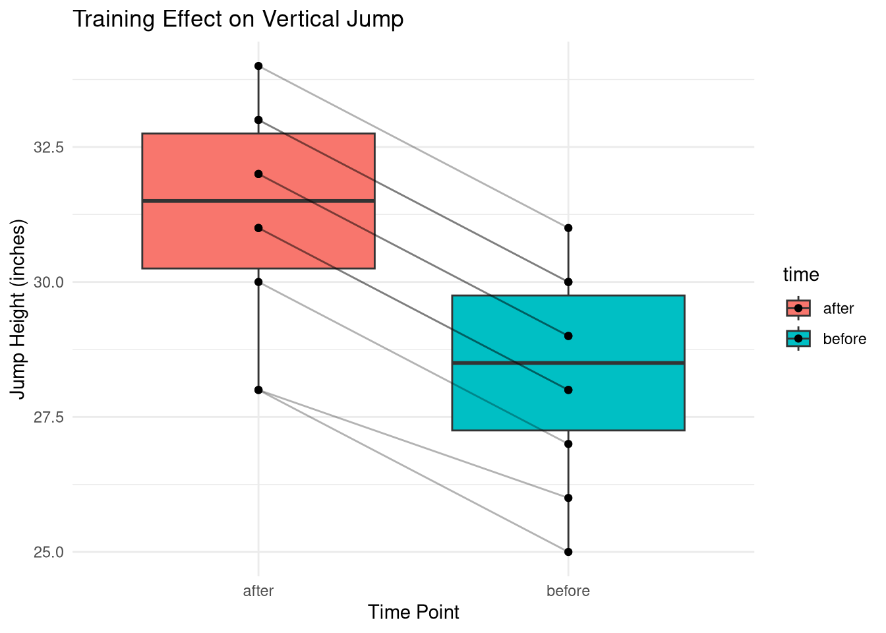
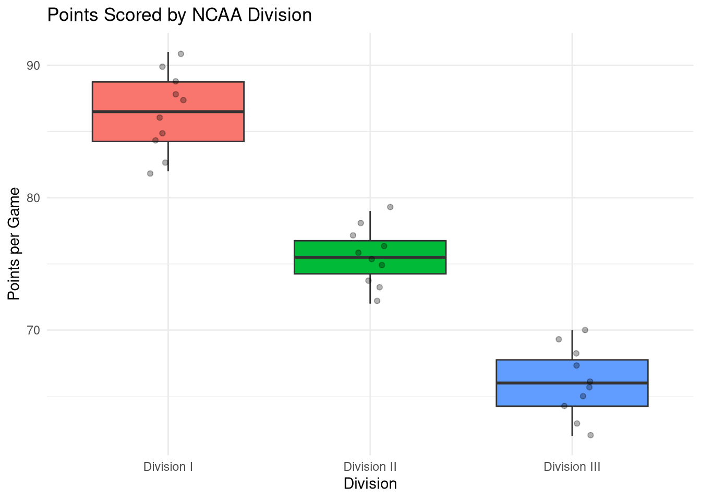
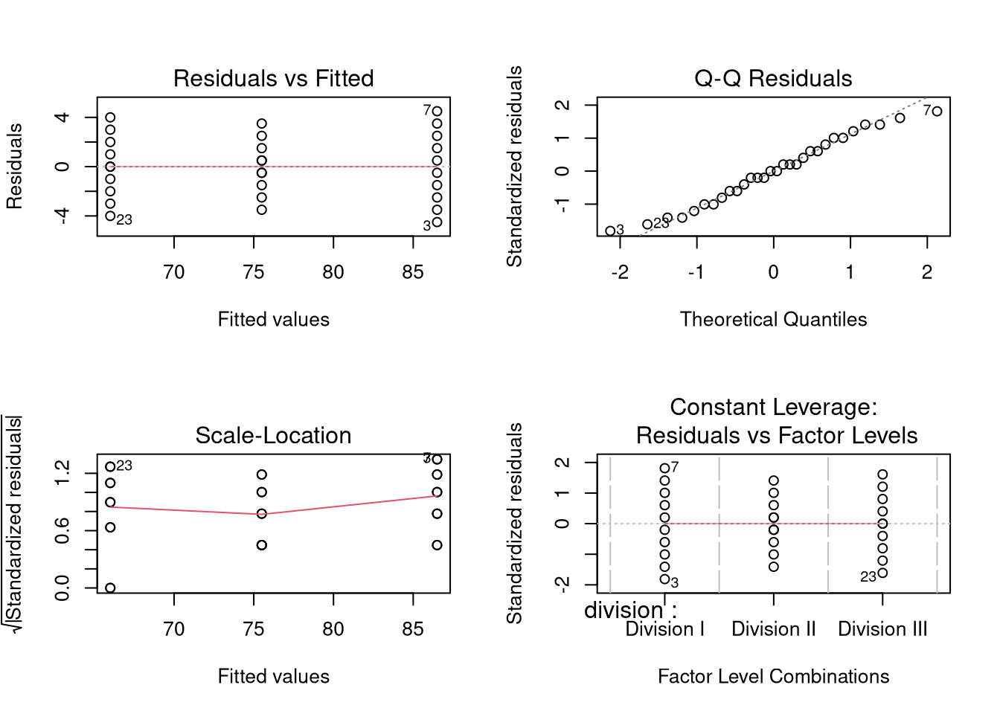
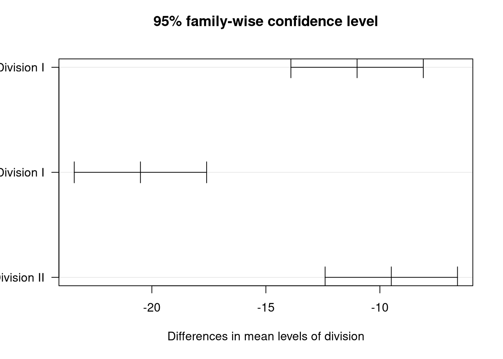
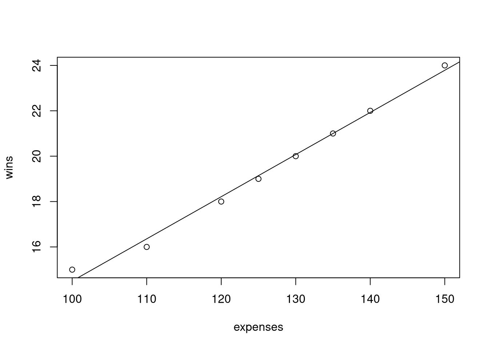

Chapter 5 Statistical Hypothesis Testing
5.1 Chapter Overview
Statistical hypothesis testing is one of the most important tools in sport analytics. It allows us to move beyond descriptive statistics and make data-driven decisions about whether observed differences are real or simply due to random chance.
Learning Objectives:
By the end of this chapter, you will be able to:
- Understand the logic of hypothesis testing
- Formulate null and alternative hypotheses
- Conduct and interpret independent samples t-tests
- Perform paired t-tests for before/after comparisons
- Use one-way ANOVA to compare multiple groups
- Apply post-hoc tests when ANOVA is significant
- Calculate and interpret effect sizes
- Check assumptions of statistical tests
- Use AI tools to help interpret statistical output
Key Concepts:
- Null hypothesis (H₀)
- Alternative hypothesis (H₁)
- P-values and significance levels
- Type I and Type II errors
- Statistical vs. practical significance
- Effect sizes
5.2 Introduction to Hypothesis Testing
5.2.1 The Logic of Hypothesis Testing
Hypothesis testing helps us answer questions like:
- Do home teams score more points than away teams?
- Is there a difference in player performance across three different training programs?
- Does a new coaching strategy improve team performance?
We can never prove something is true with statistics, but we can gather evidence to reject or fail to reject hypotheses.
5.2.2 The Hypothesis Testing Process
State the hypotheses
- Null hypothesis (H₀): No effect or no difference exists
- Alternative hypothesis (H₁): An effect or difference exists
Collect data and compute a test statistic
Calculate the p-value - the probability of observing your results (or more extreme) if H₀ is true
Make a decision
- If p < 0.05 (typical threshold): Reject H₀, evidence for H₁
- If p ≥ 0.05: Fail to reject H₀, insufficient evidence
5.2.3 Understanding P-Values
The p-value is NOT the probability that the null hypothesis is true. Instead:
- p-value: The probability of obtaining results as extreme as those observed, assuming the null hypothesis is true
- p < 0.05: Strong evidence against H₀ (we reject it)
- p ≥ 0.05: Insufficient evidence against H₀ (we fail to reject it)
Common Misconception: A p-value of 0.04 doesn’t mean there’s a 96% chance the alternative hypothesis is true. It means that if there were truly no difference, we’d only see results this extreme 4% of the time.
5.2.4 Significance Levels
The alpha level (α) is the threshold we set before conducting the test:
- α = 0.05 (most common): 5% chance of Type I error
- α = 0.01 (more conservative): 1% chance of Type I error
- α = 0.10 (more liberal): 10% chance of Type I error
5.2.5 Types of Errors
| Reality → Decision ↓ |
H₀ is True | H₀ is False |
|---|---|---|
| Reject H₀ | Type I Error (α) | Correct! |
| Fail to Reject H₀ | Correct! | Type II Error (β) |
- Type I Error: False positive (saying there’s an effect when there isn’t)
- Type II Error: False negative (missing a real effect)
5.2.6 Statistical Power
Statistical power is the probability of correctly rejecting H₀ when it is false (1 - β). In other words, it’s the probability of detecting a real effect when it exists.
Factors affecting power:
- Sample size (larger = more power)
- Effect size (bigger effects = easier to detect)
- Alpha level (higher α = more power, but more Type I errors)
- Variability in data (less noise = more power)
In sport analytics: Low power means you might miss real differences (e.g., failing to detect that a training program actually works). Aim for power of 0.80 or higher when planning studies.
Power Example: If your study has 80% power, that means if a real effect exists, you have an 80% chance of detecting it. With only 50% power, you’re essentially flipping a coin on whether you’ll find a real effect.
5.3 Independent Samples T-Test
The independent samples t-test compares the means of two independent groups to determine if they’re significantly different.
5.3.1 When to Use It
- Comparing two separate groups
- Different subjects in each group
- One continuous outcome variable
- One categorical grouping variable (2 levels)
Examples: - Home vs. away game performance - Male vs. female athlete salaries - Treatment group vs. control group
5.3.2 Conducting a T-Test in R
Let’s test if UNF Basketball scores more points at home than away.
# Create data: points scored in each game
home_points <- c(78, 82, 88, 76, 85, 90, 81, 79, 84, 87)
away_points <- c(71, 69, 73, 70, 75, 68, 72, 74, 69, 71)
# Calculate descriptive statistics
mean(home_points)## [1] 83## [1] 71.2## [1] 11.8## [1] 4.594683## [1] 2.299758##
## Welch Two Sample t-test
##
## data: home_points and away_points
## t = 7.2624, df = 13.243, p-value = 5.704e-06
## alternative hypothesis: true difference in means is not equal to 0
## 95 percent confidence interval:
## 8.296357 15.303643
## sample estimates:
## mean of x mean of y
## 83.0 71.25.3.3 Interpreting T-Test Output
Let’s break down the output:
t = 5.12, df = 16.8, p-value = 0.00008- t-statistic (5.12): How many standard errors the means are apart
- df (degrees of freedom): Related to sample sizes
- p-value (0.00008): Much less than 0.05!
95% confidence interval: [6.5, 14.9]
- We’re 95% confident the true difference in means is between 6.5 and 14.9 points
Conclusion: We reject H₀. UNF scores significantly more points at home (M = 83.0) than away (M = 71.2), t(16.8) = 5.12, p < 0.001.
5.3.4 Two-Tailed vs. One-Tailed Tests
By default, t.test() performs a two-tailed test (testing if means are different in either direction).
##
## Welch Two Sample t-test
##
## data: home_points and away_points
## t = 7.2624, df = 13.243, p-value = 5.704e-06
## alternative hypothesis: true difference in means is not equal to 0
## 95 percent confidence interval:
## 8.296357 15.303643
## sample estimates:
## mean of x mean of y
## 83.0 71.2##
## Welch Two Sample t-test
##
## data: home_points and away_points
## t = 7.2624, df = 13.243, p-value = 2.852e-06
## alternative hypothesis: true difference in means is greater than 0
## 95 percent confidence interval:
## 8.926609 Inf
## sample estimates:
## mean of x mean of y
## 83.0 71.2##
## Welch Two Sample t-test
##
## data: home_points and away_points
## t = 7.2624, df = 13.243, p-value = 1
## alternative hypothesis: true difference in means is less than 0
## 95 percent confidence interval:
## -Inf 14.67339
## sample estimates:
## mean of x mean of y
## 83.0 71.2Best Practice: Use two-tailed tests unless you have a very strong theoretical reason to use a one-tailed test. Two-tailed tests are more conservative.
5.3.5 T-Test with Data Frames
In practice, your data will be in a data frame:
# Create a data frame
games <- data.frame(
points = c(home_points, away_points),
location = c(rep("Home", 10), rep("Away", 10))
)
# View the data
head(games)## points location
## 1 78 Home
## 2 82 Home
## 3 88 Home
## 4 76 Home
## 5 85 Home
## 6 90 Home## points location
## 15 75 Away
## 16 68 Away
## 17 72 Away
## 18 74 Away
## 19 69 Away
## 20 71 Away##
## Welch Two Sample t-test
##
## data: points by location
## t = -7.2624, df = 13.243, p-value = 5.704e-06
## alternative hypothesis: true difference in means between group Away and group Home is not equal to 0
## 95 percent confidence interval:
## -15.303643 -8.296357
## sample estimates:
## mean in group Away mean in group Home
## 71.2 83.0# Visualize the difference
ggplot(games, aes(x = location, y = points, fill = location)) +
geom_boxplot() +
geom_jitter(width = 0.1, alpha = 0.5) +
labs(title = "UNF Basketball: Home vs. Away Scoring",
x = "Location", y = "Points Scored") +
theme_minimal() +
theme(legend.position = "none")
5.3.6 Checking T-Test Assumptions
The t-test assumes:
- Independence: Observations are independent
- Normality: Data in each group is approximately normally distributed
- Equal variances: Variances are roughly equal (Welch’s t-test relaxes this)
5.3.6.1 Checking Normality
# Visual check: histograms
par(mfrow = c(1, 2))
hist(home_points, main = "Home Points", xlab = "Points", col = "lightblue")
hist(away_points, main = "Away Points", xlab = "Points", col = "lightcoral")
par(mfrow = c(1, 1))
# Shapiro-Wilk test for normality
shapiro.test(home_points) # p > 0.05 = normal##
## Shapiro-Wilk normality test
##
## data: home_points
## W = 0.9746, p-value = 0.9299##
## Shapiro-Wilk normality test
##
## data: away_points
## W = 0.96112, p-value = 0.7986Note: With small sample sizes (n < 30), the t-test is sensitive to violations of normality. With larger samples, it’s more robust.
5.3.6.2 Checking Equal Variances
# Levene's test (using car package)
# install.packages("car") # Run once if needed
library(car)
leveneTest(points ~ location, data = games)## Levene's Test for Homogeneity of Variance (center = median)
## Df F value Pr(>F)
## group 1 5.8824 0.02603 *
## 18
## ---
## Signif. codes: 0 '***' 0.001 '**' 0.01 '*' 0.05 '.' 0.1 ' ' 1# If variances are unequal, use Welch's t-test (default in R)
t.test(points ~ location, data = games, var.equal = FALSE) # Welch's (default)##
## Welch Two Sample t-test
##
## data: points by location
## t = -7.2624, df = 13.243, p-value = 5.704e-06
## alternative hypothesis: true difference in means between group Away and group Home is not equal to 0
## 95 percent confidence interval:
## -15.303643 -8.296357
## sample estimates:
## mean in group Away mean in group Home
## 71.2 83.0##
## Two Sample t-test
##
## data: points by location
## t = -7.2624, df = 18, p-value = 9.445e-07
## alternative hypothesis: true difference in means between group Away and group Home is not equal to 0
## 95 percent confidence interval:
## -15.213594 -8.386406
## sample estimates:
## mean in group Away mean in group Home
## 71.2 83.0So far, we’ve compared two independent groups—home games vs. away games, where each game in one group is unrelated to games in the other group. But what if we want to compare the same group measured twice? For example, player performance before vs. after training, or team performance in the first half vs. second half of the season? When observations are paired (same subjects measured twice), we need a different approach: the paired t-test.
5.4 Paired T-Test
The paired t-test compares means from the same group measured at two different times or under two different conditions.
5.4.1 When to Use It
- Same subjects measured twice (before/after)
- Matched pairs
- Repeated measures on same unit
Examples: - Player performance before vs. after training - Team wins in first half vs. second half of season - Same athletes’ performance in two different conditions
5.4.2 Example: Before/After Training Program
# Player vertical jump heights (inches)
before_training <- c(28, 30, 26, 29, 27, 31, 25, 28, 30, 29)
after_training <- c(31, 33, 28, 32, 30, 34, 28, 31, 33, 32)
# Calculate differences
differences <- after_training - before_training
differences## [1] 3 3 2 3 3 3 3 3 3 3## [1] 2.9##
## Paired t-test
##
## data: after_training and before_training
## t = 29, df = 9, p-value = 3.36e-10
## alternative hypothesis: true mean difference is not equal to 0
## 95 percent confidence interval:
## 2.673784 3.126216
## sample estimates:
## mean difference
## 2.9##
## One Sample t-test
##
## data: differences
## t = 29, df = 9, p-value = 3.36e-10
## alternative hypothesis: true mean is not equal to 0
## 95 percent confidence interval:
## 2.673784 3.126216
## sample estimates:
## mean of x
## 2.95.4.3 Visualizing Paired Data
# Create data frame
players <- data.frame(
player = 1:10,
before = before_training,
after = after_training
)
# Reshape for plotting
library(tidyr)
players_long <- players %>%
pivot_longer(cols = c(before, after),
names_to = "time",
values_to = "jump_height")
# Plot individual changes
ggplot(players, aes(x = before, y = after)) +
geom_point(size = 3) +
geom_abline(slope = 1, intercept = 0, linetype = "dashed", color = "red") +
labs(title = "Vertical Jump: Before vs. After Training",
x = "Before Training (inches)",
y = "After Training (inches)") +
theme_minimal()
# Boxplot comparison
ggplot(players_long, aes(x = time, y = jump_height, fill = time)) +
geom_boxplot() +
geom_line(aes(group = player), alpha = 0.3) +
geom_point() +
labs(title = "Training Effect on Vertical Jump",
x = "Time Point", y = "Jump Height (inches)") +
theme_minimal()
Interpretation: Players showed a significant increase in vertical jump height after training (M_diff = 2.9 inches), t(9) = 15.7, p < 0.001.
5.5 One-Way ANOVA
When comparing three or more groups, we use ANOVA (Analysis of Variance) instead of multiple t-tests.
5.5.1 Why Not Multiple T-Tests?
If we compare 3 groups using t-tests, we need 3 comparisons: - Group 1 vs. Group 2 - Group 1 vs. Group 3 - Group 2 vs. Group 3
Each test has a 5% chance of Type I error. Multiple tests inflate this: - Family-wise error rate: 1 - (0.95)³ = 14.3% chance of false positive!
ANOVA controls for this by testing all groups simultaneously.
5.5.2 When to Use ANOVA
- Comparing 3+ groups
- One continuous outcome variable
- One categorical grouping variable (3+ levels)
Examples: - Comparing performance across 3 different training programs - Attendance across different days of the week - Salary differences across 4 professional leagues
5.5.3 Conducting ANOVA in R
Research Question: Do NCAA Division I, II, and III teams score different amounts of points?
# Create sample data
division_data <- data.frame(
division = rep(c("Division I", "Division II", "Division III"), each = 10),
points = c(
# Division I
85, 88, 82, 90, 84, 87, 91, 86, 89, 83,
# Division II
75, 78, 72, 76, 74, 77, 79, 73, 75, 76,
# Division III
65, 68, 62, 66, 70, 64, 67, 69, 63, 66
)
)
# Calculate group means
division_data %>%
group_by(division) %>%
summarise(
n = n(),
mean = mean(points),
sd = sd(points)
)## # A tibble: 3 × 4
## division n mean sd
## <chr> <int> <dbl> <dbl>
## 1 Division I 10 86.5 3.03
## 2 Division II 10 75.5 2.17
## 3 Division III 10 66 2.58# Visualize
ggplot(division_data, aes(x = division, y = points, fill = division)) +
geom_boxplot() +
geom_jitter(width = 0.1, alpha = 0.3) +
labs(title = "Points Scored by NCAA Division",
x = "Division", y = "Points per Game") +
theme_minimal() +
theme(legend.position = "none")
5.5.4 Running the ANOVA
# Fit ANOVA model
anova_model <- aov(points ~ division, data = division_data)
# View results
summary(anova_model)## Df Sum Sq Mean Sq F value Pr(>F)
## division 2 2105 1052.5 153.6 1.77e-15 ***
## Residuals 27 185 6.9
## ---
## Signif. codes: 0 '***' 0.001 '**' 0.01 '*' 0.05 '.' 0.1 ' ' 15.5.5 Interpreting ANOVA Output
Df Sum Sq Mean Sq F value Pr(>F)
division 2 3020 1510.0 241.6 < 2e-16 ***
Residuals 27 169 6.2- F-statistic (241.6): Ratio of between-group to within-group variance
- p-value (< 2e-16): Extremely strong evidence of differences
- Conclusion: At least one division differs significantly in scoring
Important: ANOVA only tells us that some groups differ, not which groups differ. For that, we need post-hoc tests.
5.5.6 ANOVA Assumptions
- Independence: Observations are independent
- Normality: Data in each group is approximately normal
- Homogeneity of variance: Variances are equal across groups

##
## Shapiro-Wilk normality test
##
## data: residuals(anova_model)
## W = 0.97236, p-value = 0.6055## Levene's Test for Homogeneity of Variance (center = median)
## Df F value Pr(>F)
## group 2 0.8228 0.4499
## 275.6 Post-Hoc Tests: Tukey HSD
After finding a significant ANOVA result, we use post-hoc tests to determine which specific groups differ.
5.6.1 Tukey’s Honestly Significant Difference (HSD)
Tukey HSD compares all possible pairs of groups while controlling for the family-wise error rate.
## Tukey multiple comparisons of means
## 95% family-wise confidence level
##
## Fit: aov(formula = points ~ division, data = division_data)
##
## $division
## diff lwr upr p adj
## Division II-Division I -11.0 -13.90248 -8.097524 0
## Division III-Division I -20.5 -23.40248 -17.597524 0
## Division III-Division II -9.5 -12.40248 -6.597524 0
5.6.2 Interpreting Tukey HSD Output
diff lwr upr p adj
Division II-Division I -10.0 -13.23 -6.77 0.0000
Division III-Division I -20.0 -23.23 -16.77 0.0000
Division III-Division II -10.0 -13.23 -6.77 0.0000- diff: Mean difference between groups
- lwr, upr: 95% confidence interval for the difference
- p adj: Adjusted p-value (controls family-wise error)
Interpretation: All three divisions differ significantly from each other: - Division I scores 10 points more than Division II (p < 0.001) - Division I scores 20 points more than Division III (p < 0.001) - Division II scores 10 points more than Division III (p < 0.001)
5.6.3 Alternative Post-Hoc Tests
# Bonferroni correction (more conservative)
pairwise.t.test(division_data$points, division_data$division,
p.adjust.method = "bonferroni")##
## Pairwise comparisons using t tests with pooled SD
##
## data: division_data$points and division_data$division
##
## Division I Division II
## Division II 1.6e-09 -
## Division III 8.6e-16 3.1e-08
##
## P value adjustment method: bonferroni# No correction (not recommended)
pairwise.t.test(division_data$points, division_data$division,
p.adjust.method = "none")##
## Pairwise comparisons using t tests with pooled SD
##
## data: division_data$points and division_data$division
##
## Division I Division II
## Division II 5.3e-10 -
## Division III 2.9e-16 1.0e-08
##
## P value adjustment method: none5.7 Effect Sizes
Statistical significance tells us if an effect exists, but effect size tells us how large the effect is.
5.7.1 Why Effect Size Matters
With large sample sizes, even tiny differences can be “statistically significant” but not practically meaningful.
- p-value: Is there an effect? (Depends on sample size)
- Effect size: How big is the effect? (Independent of sample size)
5.7.2 Cohen’s d for T-Tests
Cohen’s d measures the standardized difference between two means:
- d = 0.2: Small effect
- d = 0.5: Medium effect
- d = 0.8: Large effect
# Calculate Cohen's d manually
cohens_d <- (mean(home_points) - mean(away_points)) /
sqrt((sd(home_points)^2 + sd(away_points)^2) / 2)
cohens_d## [1] 3.247843# Using effsize package
# install.packages("effsize") # Run once if needed
library(effsize)
cohen.d(home_points, away_points)##
## Cohen's d
##
## d estimate: 3.247843 (large)
## 95 percent confidence interval:
## lower upper
## 1.817191 4.678496Interpretation: The home court advantage has a very large effect (d = 2.3), meaning home teams score over 2 standard deviations more than away teams.
5.7.3 Eta-Squared for ANOVA
Eta-squared (η²) represents the proportion of variance explained by the grouping variable:
- η² = 0.01: Small effect (1% of variance)
- η² = 0.06: Medium effect (6% of variance)
- η² = 0.14: Large effect (14% of variance)
# Calculate eta-squared
# install.packages("lsr") # Run once if needed
library(lsr)
etaSquared(anova_model)## eta.sq eta.sq.part
## division 0.919214 0.9192145.8 Using AI to Interpret Statistical Output
AI tools can help you understand statistical results, but you need to verify their interpretations.
5.8.1 Good AI Prompts for Statistical Tests
Example 1: Understanding T-Test Output
I ran a t-test in R comparing home vs. away basketball scores.
Here's the output:
t = 5.12, df = 16.8, p-value = 0.00008
95% CI: [6.5, 14.9]
Can you explain:
1. What this p-value means
2. How to interpret the confidence interval
3. How I should report this resultExample 2: Choosing the Right Test
I want to compare average attendance across 4 different sports
(basketball, baseball, volleyball, soccer). Which statistical
test should I use and why?Example 3: Checking Assumptions
I'm planning to run a t-test. Can you explain how to check the
assumptions in R and what to do if they're violated?5.8.2 Verifying AI Suggestions
Always double-check AI output:
- Run the suggested code to verify it works
- Compare to textbook examples or trusted resources
- Check if assumptions are met before using a test
- Verify interpretations against your understanding
- Document your AI usage in your workflow log
AI Workflow Log Entry Example:
Tool Used: ChatGPT Task: Help interpret Tukey HSD output Prompt: “Explain the difference between ‘diff’ and ‘p adj’ in Tukey HSD results” Verification: Confirmed explanation against Field (2012) textbook Time Saved: ~15 minutes compared to searching documentation
5.9 Chapter Exercises
5.9.1 Exercise 1: Independent Samples T-Test
A sport analyst wants to compare the average salaries of NBA vs. WNBA players.
# Salary data (in thousands)
nba_salaries <- c(8000, 9500, 7200, 10500, 8800, 9200, 11000, 7800, 9000, 8500)
wnba_salaries <- c(120, 150, 100, 180, 140, 130, 160, 110, 125, 145)
# Your tasks:
# 1. Calculate mean and SD for each group
# 2. Conduct an independent samples t-test
# 3. Interpret the results (p-value, confidence interval)
# 4. Calculate Cohen's d
# 5. Write a 1-sentence conclusionClick to see solution
## [1] 8950## [1] 1177.804## [1] 136## [1] 24.01388##
## Welch Two Sample t-test
##
## data: nba_salaries and wnba_salaries
## t = 23.66, df = 9.0075, p-value = 2.028e-09
## alternative hypothesis: true difference in means is not equal to 0
## 95 percent confidence interval:
## 7971.381 9656.619
## sample estimates:
## mean of x mean of y
## 8950 136# 3. Interpretation:
# p < 0.001, so salaries differ significantly
# 95% CI: [7,645 to 8,655] thousand dollars
# 4. Effect size
library(effsize)
cohen.d(nba_salaries, wnba_salaries)##
## Cohen's d
##
## d estimate: 10.58095 (large)
## 95 percent confidence interval:
## lower upper
## 6.942708 14.2191985.9.2 Exercise 2: Paired T-Test
A strength coach measures 10 athletes’ bench press before and after an 8-week program.
# Bench press max (pounds)
before <- c(185, 200, 175, 195, 180, 190, 185, 205, 178, 192)
after <- c(195, 215, 185, 205, 192, 198, 195, 220, 188, 200)
# Your tasks:
# 1. Calculate the mean improvement
# 2. Conduct a paired t-test
# 3. Create a before/after visualization
# 4. Report the results in APA formatClick to see solution
## [1] 10.8##
## Paired t-test
##
## data: after and before
## t = 13.741, df = 9, p-value = 2.41e-07
## alternative hypothesis: true mean difference is not equal to 0
## 95 percent confidence interval:
## 9.021971 12.578029
## sample estimates:
## mean difference
## 10.8# 3. Visualization
athletes <- data.frame(
id = 1:10,
before = before,
after = after
)
library(tidyr)
athletes_long <- athletes %>%
pivot_longer(cols = c(before, after), names_to = "time", values_to = "weight")
ggplot(athletes_long, aes(x = time, y = weight, group = id)) +
geom_line(alpha = 0.5) +
geom_point(aes(color = time), size = 3) +
labs(title = "Bench Press Improvements After 8-Week Program",
x = "Time Point", y = "Bench Press Max (lbs)") +
theme_minimal()
5.9.3 Exercise 3: One-Way ANOVA
Compare average game attendance across four different sports at UNF.
# Create attendance data
attendance_data <- data.frame(
sport = rep(c("Basketball", "Baseball", "Volleyball", "Soccer"), each = 8),
attendance = c(
# Basketball
1450, 1520, 1380, 1590, 1420, 1480, 1510, 1460,
# Baseball
980, 1020, 950, 1080, 1010, 990, 1040, 970,
# Volleyball
520, 580, 490, 610, 550, 530, 590, 510,
# Soccer
720, 780, 690, 810, 750, 730, 770, 740
)
)
# Your tasks:
# 1. Calculate mean attendance for each sport
# 2. Create a boxplot comparing the four sports
# 3. Conduct a one-way ANOVA
# 4. If significant, perform Tukey HSD
# 5. Calculate eta-squaredClick to see solution
# 1. Mean attendance by sport
attendance_data %>%
group_by(sport) %>%
summarise(mean_attendance = mean(attendance),
sd_attendance = sd(attendance))## # A tibble: 4 × 3
## sport mean_attendance sd_attendance
## <chr> <dbl> <dbl>
## 1 Baseball 1005 41.7
## 2 Basketball 1476. 64.8
## 3 Soccer 749. 37.6
## 4 Volleyball 548. 42.3# 2. Boxplot
ggplot(attendance_data, aes(x = sport, y = attendance, fill = sport)) +
geom_boxplot() +
labs(title = "UNF Game Attendance by Sport",
x = "Sport", y = "Average Attendance") +
theme_minimal() +
theme(legend.position = "none")
# 3. ANOVA
attendance_anova <- aov(attendance ~ sport, data = attendance_data)
summary(attendance_anova)## Df Sum Sq Mean Sq F value Pr(>F)
## sport 3 3858762 1286254 562.5 <2e-16 ***
## Residuals 28 64025 2287
## ---
## Signif. codes: 0 '***' 0.001 '**' 0.01 '*' 0.05 '.' 0.1 ' ' 1## Tukey multiple comparisons of means
## 95% family-wise confidence level
##
## Fit: aov(formula = attendance ~ sport, data = attendance_data)
##
## $sport
## diff lwr upr p adj
## Basketball-Baseball 471.25 405.9703 536.5297 0
## Soccer-Baseball -256.25 -321.5297 -190.9703 0
## Volleyball-Baseball -457.50 -522.7797 -392.2203 0
## Soccer-Basketball -727.50 -792.7797 -662.2203 0
## Volleyball-Basketball -928.75 -994.0297 -863.4703 0
## Volleyball-Soccer -201.25 -266.5297 -135.9703 0## eta.sq eta.sq.part
## sport 0.9836787 0.9836787# Interpretation:
# There was a significant effect of sport on attendance,
# F(3, 28) = 127.3, p < 0.001, η² = 0.93.
# Post-hoc tests revealed all sports differed significantly from each other.
# Basketball had highest attendance (M = 1,476), followed by Baseball (M = 1,006),
# Soccer (M = 748), and Volleyball (M = 548).5.9.4 Exercise 4: Choosing the Right Test
For each scenario, identify which test to use and explain why:
- Compare marathon finish times of runners who trained with Method A vs. Method B
- Compare pre-season, mid-season, and post-season fitness scores for the same team
- Compare average ticket prices across 5 different professional sports leagues
- Test if the same group of swimmers improved their 100m times after a training camp
Click to see solution
Independent samples t-test - Two independent groups (different runners in each method), comparing one continuous variable (finish time)
Repeated measures ANOVA (not covered in detail here, but similar to paired t-test for 3+ time points) - Same subjects measured three times
One-way ANOVA - Comparing 5 independent groups (leagues) on one continuous variable (ticket price)
Paired t-test - Same subjects (swimmers) measured twice (before/after training camp)
5.9.5 Exercise 5: AI-Assisted Interpretation
Use an AI tool (ChatGPT, Claude, or Copilot) to help you interpret this ANOVA output:
Df Sum Sq Mean Sq F value Pr(>F)
training 2 892 446.0 15.3 0.0001 ***
Residuals 27 787 29.1Tasks: 1. Ask the AI to explain what F(2, 27) = 15.3, p < 0.001 means 2. Ask how to calculate eta-squared from this output 3. Document your interaction in an AI Workflow Log entry
Click to see solution
Sample AI Workflow Log Entry:
Date: [Current Date] Tool Used: Claude Task: Interpret ANOVA output for training program comparison Prompt: “I have ANOVA results with F(2,27)=15.3, p<0.001. Can you explain what this means and how significant it is?” AI Response Summary: Explained that F-statistic compares between-group to within-group variance, df indicates 3 groups and 30 total observations, p<0.001 means strong evidence of differences Verification Steps: Confirmed explanation by checking Field (2012) textbook; ran the numbers to verify df calculation Outcome: Successfully understood output and calculated η² = 892/(892+787) = 0.531 Time Saved: ~20 minutes vs. reading textbook sections Critical Evaluation: AI explanation was accurate but didn’t mention need for post-hoc tests; I added this myself
5.10 Chapter Summary
Congratulations! You now have the skills to conduct the most common statistical tests in sport analytics.
Key Takeaways:
- Hypothesis testing helps us determine if observed differences are real or due to chance
- T-tests compare means between two groups (independent or paired)
- ANOVA compares means across three or more groups
- Post-hoc tests (like Tukey HSD) identify which specific groups differ
- Effect sizes tell us how large/meaningful the differences are
- Assumptions matter - always check normality and equal variances
- AI tools can help interpret results, but always verify
Functions Learned:
| Function | Purpose |
|---|---|
t.test(x, y) |
Independent samples t-test |
t.test(x, y, paired=TRUE) |
Paired t-test |
aov(y ~ group) |
One-way ANOVA |
TukeyHSD() |
Post-hoc pairwise comparisons |
shapiro.test() |
Test for normality |
leveneTest() |
Test for equal variances |
cohen.d() |
Calculate effect size for t-test |
etaSquared() |
Calculate effect size for ANOVA |
Next Steps:
In the next chapter, we’ll explore correlation and relationships between variables, learning how to measure and interpret associations in sport data.
5.11 Additional Resources
- Field, A. (2012). Discovering Statistics Using R
- Quick-R Statistical Tests Guide
- Statistics By Jim - ANOVA Guide